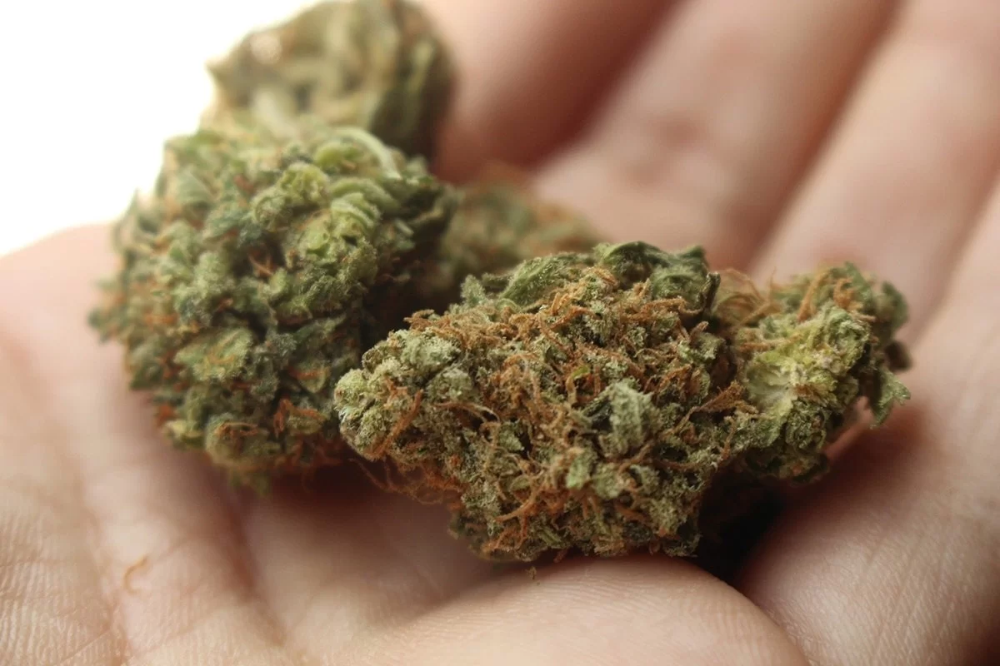
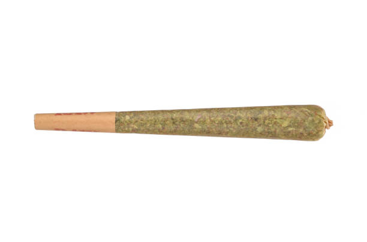
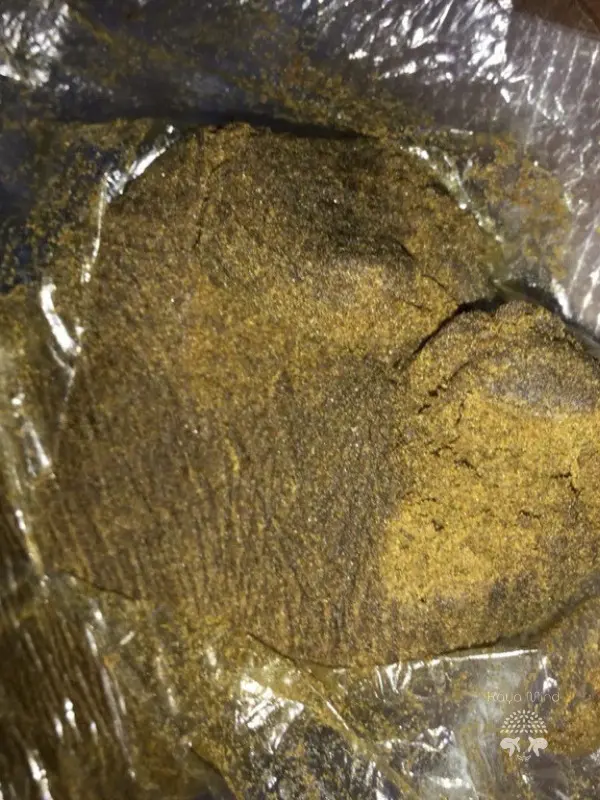
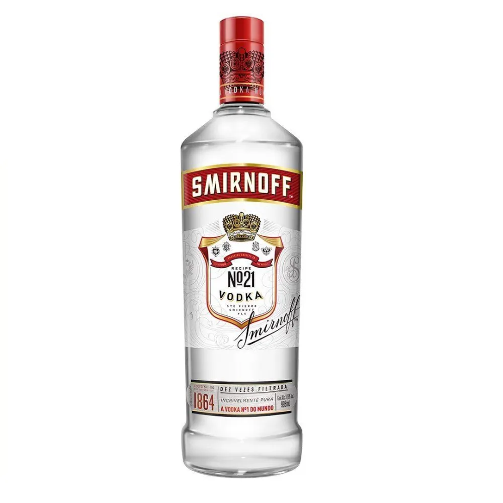
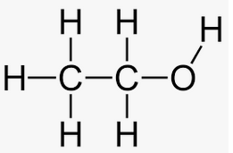
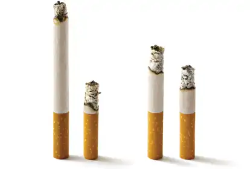
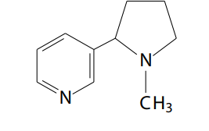
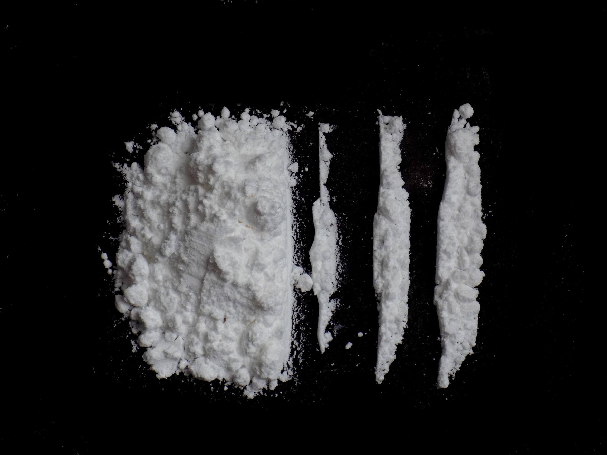
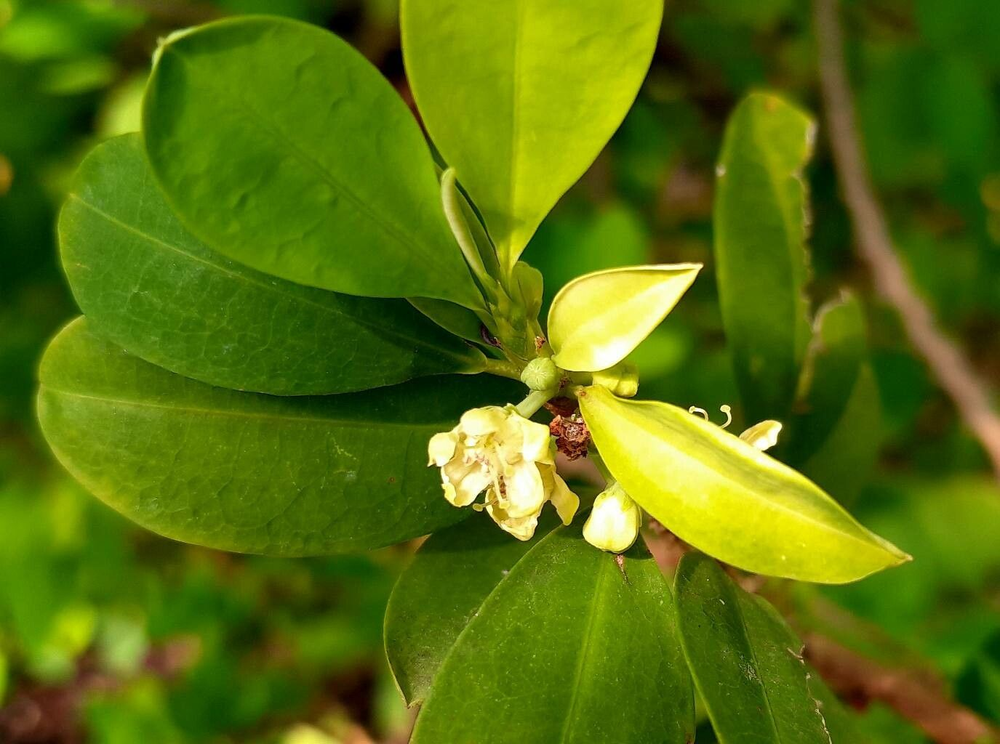
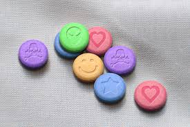

Precisamos informar que nos da DrugSense somos TOTALMENTE CONTRA DROGAS, não recomendamos o uso, este site é apenas informativo.
Não usem drogas.
A maconha é um conjunto de plantas Cannabis, que são alucinogicas e psicoativas
A droga é utilizada a partir de um cigarro da flor da planta, esse cigarro é popularmente chamado de "baseado" ou "beck". O "baseado" é a flor da maconha enrolada em uma folha pequena de um papel chamado de "seda" com um filtro de papel na ponta, esse filtro impede a flor da maconha ser inalada, fazendo somente a fumaça ser utilizada.
É muito comun utilizarem extratos da maconha para mudar ou até reforçar o efeito, os mais comuns são o haxixe e o ice. Esses extratos são extrações de flores especificas da cannabis que são colocadas em um processo para transformar eles em um tipo de massinha.
O seu efeito vem do THC (tetrahidrocanabinol), principal componente da planta que gera diversos efeitos ao utilizador, dentre eles os mais comuns são:
Hoje em dia é restrito o porte da droga em até 60 gramas, porem ja ouve muito debate sobre sua liberação. Muitos acham que ela é legalizada, porem não, sua utilização é sim legalizada, porem sua venda é proibida em todo o país, essa regulamentação é polemica pois divide a população em a favor da liberação e contra.
O álcool é uma droga licita (é legal o consumo e a venda) que se resumo em bebidas com a adição de etanol na sua composição. Na maior parte dos países, o álcool é uma droga totalmente legalizada mesmo sendo uma droga psicoativa e depressora e tendo restrições de seu consumo.
O uso recorrente das bebidas pode levar o utilizador a situações de dependencia quimica, virando um alcoolatra. O alcoolismo é caracterizado pela vontade incontrolável de beber, falta de controle ao tentar parar a ingestão, tolerância ao álcool e dependência física, que se manifesta com sintomas físicos e psíquicos nas situações de abstinência alcoólica.
As dependencias ocorrem quando o cerebro se acostuma com o efeito do etanol, o que pode levar a dependencia física, psíquica e emocional. Seu vicio vem dos efeitos, ja que no começo se sente uma felicidade alta, euforia e adrenalina e quando se esta viciado a produção de hormonios dessas sensações se torna cada vez menos intensa.
O cigarro é uma droga licita na maioria dos paises, ele é um pequeno cilindro de folhas de tabaco de corte fino, enroladas numa mortalha, que pode ser fumado. A maior parte dos cigarros modernos produzidos em fábrica incluem um filtro numa das pontas, e geralmente incluem tabaco reconstituído e outros aditivos.
A principal substância química psicoativa no tabaco é a nicotina, uma droga psicoativa, alcaloide básica, líquida e de cor amarela. A nicotina exerce dois efeitos: um efeito estimulante exercido no locus ceruleus e um efeito de recompensa no sistema límbico. A administração intravenosa de nicotina causa liberação de acetilcolina, noradrenalina, dopamina, serotonina, vasopressina, beta-endorfina e ACTH. Estes compostos são hormonios de emoção e sensação, então essas liberações geram uma manipulação na recepção de sentimentos no cerebro.
Quando consumida por meio do tabaco o seu efeito manifesta-se de duas maneiras distintas: tem um efeito estimulante e, após algumas tragadas profundas, tem efeito tranquilizante, bloqueando o estresse.Seu uso causa dependência psíquica e física, provocando sensações desconfortáveis na abstinência.
Por lei, os cigarros não podem ter comerciais incentivando seu uso, alem disso todos os maços comercializados tem campanhas contra o tabagismo e recomendam largar a nicotina.
Em 2007, 27% dos brasileiros eram fumantes passivos, em 2020 houve uma queda para 12%, porem em 2024, 20% são tabagistas, isso se da pela criação do "vape", que foi acatada por adolecentes e jovens adultos, sendo muito mais viciante e pratico do que o cigarro.
A cocaina é um alcaloide, estimulante, com efeitos anestésicos utilizada fundamentalmente como uma droga recreativa. Pode ser aspirada, fumada ou injectada. Os efeitos mentais podem incluir perda de contacto com a realidade, um intenso sentimento de felicidade ou agitação.
A cocaina vem do extrato da flor de coca, Para a extração e produção da cocaína como entorpecente primeiro as folhas de coca são maceradas na presença de ácido sulfúrico (H2SO4) (ou a gasolina é empregada como substituta do ácido) resultando em uma pasta conhecida como extrato da cocaína. A segunda etapa consiste em misturar o extrato com ácido clorídrico (HCl) formando o pó branco característico da droga.
Depois da cannabis, a cocaína é o estupefaciente ilegal mais consumido a nível mundial, e calcula-se que entre 18 e 22 milhões de pessoas utilizaram a substância em 2014 com a América do Norte como seu principal consumidor, seguido da Europa e da América do Sul.
MD é uma abreviação para 3,4-metilenodioximetanfetamina, um composto psicotrópico usado frequentemente como droga recreativa por adolecentes e jovens adultos. Os efeitos recreativos desejados mais comuns são aumento da empatia, estado de euforia e sensação de prazer.
Quando ingerida por via oral, os efeitos têm início após 30 a 45 minutos e duram entre 3 e 6 horas. À data de 2017, a MDMA não possuía qualquer aplicação em medicina, embora esteja atualmente sendo investigada como auxiliar no tratamento do transtorno de estresse pós-traumático.
A "bala" é vista como uma droga recente, porem ela foi criada em 1912 por uma empresa farmaceutica que não existe mais. Ela é vista como recente mesmo sendo do seculo passado pois foi descoberto seus efeitos hoje em dia.
A droga ficou popular pois é barata, discreta e não é "tão pesada" na familia de sinteticos, então muitos jovens usam e não são percebidos pela policia.